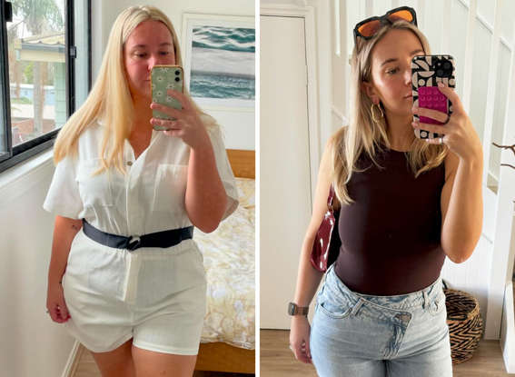

Emily Johnson
“I’ve struggled with my weight for years, but OzempNic changed everything! In just six months, I lost 40 pounds and gained confidence I never thought possible. The personalized meal plans and coaching were life-changing!”
Be inspired by the incredible transformations of our clients!
“I’ve struggled with my weight for years, but OzempNic changed everything! In just six months, I lost 40 pounds and gained confidence I never thought possible. The personalized meal plans and coaching were life-changing!”
“I was skeptical at first, but after following the program for 3 months, I dropped 25 pounds. The progress tracking tools kept me motivated every step of the way. Thank you, OzempNic!”
“I’m a busy mom with little time to focus on myself, but the support I received from OzempNic made it manageable. I’ve lost 30 pounds and feel stronger and healthier than ever!”